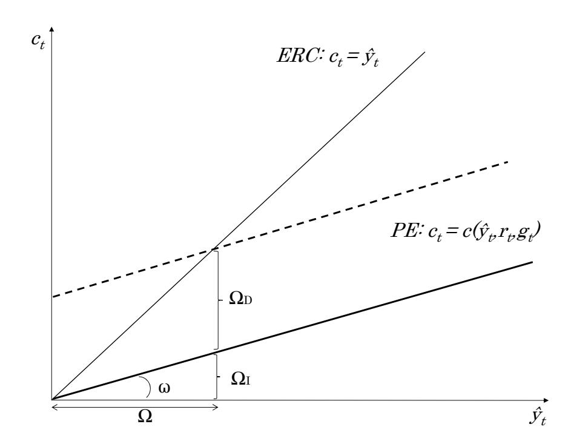

Heterogeneous Agent Macroeconomics
A Tractable New Keynesian Framework
Florin O. Bilbiie
University of Cambridge & CEPR
Forthcoming, MIT Press
First version 2019, this version November 2025
Chapter 21
Preliminary and Incomplete. Comments Requested
© Florin O. Bilbiie 2019
Chapter 2: The Representative-Agent New Keynesian Model: A Keynesian-Cross Reinterpretation
In this chapter, we consider the stripped-down version of the Representative-Agent New Keynesian model outlined in the seminal monographs by Woodford (2003) and Gal´ı (2008)—but from a slightly different perspective, which underscores some of its key limitations. The basis of this is a reinterpretation of it through the lens of a (New) Keynesian cross, or consumption function, with a given real interest rate. In all models, considered, unless otherwise stated, prices are sticky and output is demand-determined. To isolate the role of the aggregate demand side, I abstract from the equilibrium mechanism by which the real interest rate is determined and assume throughout that it is controlled by the central bank: as in e.g. Bilbiie (2008, 2011, 2020), this corresponds to the case of fixed prices, or of a Taylor rule that sets nominal rates it to neutralize expected inflation \(\pi_t\) (in log-deviations \(i_t = E_t \pi_{t+1} + r_t\) , thus de facto controlling the real rate \(r_t\)).
Although the model is described as a New Keynesian Dynamic Stochastic General-Equilibrium model, this Keynesian cross representation shows that the model is in fact not very “Keynesian” at all. The model generates a consumption function which is virtually insensitive to current income, producing counterfactually low marginal propensities to consume. Moreover, the effects of monetary policy in the model stem almost entirely from the partial equilibrium direct effect of the change in interest rates. This means that the model has virtually no “general-equilibrium” effects either.
Secondly, the RANK model generates a number of paradoxical and counterintuitive results. In particular, this chapter will highlight the forward guidance puzzle, and the negative co-movement between the output gap and supply shocks.
RANK: Why Go Beyond 2
In the RANK model with complete markets, the representative consumer solves the following maximisation problem: \[ \max E_0 \sum_{t=0}^{\infty} \beta^t U(C_t^j, N_t^j) \] s.t. \(Z_{t+1}^j + \Theta_{t=1}^j V_t \leq B_t^j + \Theta_t^j (V_t + P_t D_t) + W_t N_t^j - P_t C_t^j\) .
Above, \(Z_{t+1}^j\) denotes the nominal end of period t portfolio of all state-contingent assets (excluding shares) while \(B_t^j\) is the beginning of period wealth. \(\Theta_t^j\) represents the number of shares held by the consumer in period t. Shares have average market value \(V_t\) and pay a real dividend equal to \(D_t\).
The no-arbitrage condition for the assets implies that there is a stochastic discount factor \(Q_{t,t+1}^{j}\) such that: \[ \frac{Z_{t+1}^j}{P_t} = E_t \left[ Q_{t,t+1}^j \frac{B_{t+1}^j}{P_{t+1}} \right] \text{ and } \frac{V_t}{P_t} = E_t \left[ Q_{t,t+1}^j (\frac{V_{t+1}}{P_{t+1}} + D_{t+1}) \right]. \]
We can also define the gross real rate of interest as the return on a one-period riskless real bond: \[ \frac{1}{R_t} = E_t Q_{t,t+1}^j. \]
In equilibrium, there will be no trade in shares as all agents will hold a constant fraction of shares \(\Theta^j\) (which must be equal to one in the aggregate). Substituting the no-arbitrage conditions into the flow budget constraint and imposing the ‘natural’ no borrowing limit by state ( \(Z_t^j = 0\)) yields the intertemporal budget constraint (IBC): \[ E_t \sum_{i=0}^{\infty} Q_{t,t+i}^j C_{t+i}^j \le E_t \sum_{i=0}^{\infty} Q_{t,t+i}^j Y_{t+i}^j , \] where income is defined as the sum of financial (dividend) income and labour income: \[ Y_{t+i}^{j} \equiv \Theta^{j} D_{t+i} + \frac{W_{t+i}}{P_{t+i}} N_{t+i}. \]
The intertemporal budget constraint simply states that the expected discounted consumption must not exceed expected total income from labour an shares. The consumer chooses consumption to maximise utility subject to the IBC. This yields \[ \beta \frac{U_c(C_{t+1}^j)}{U_c(C_t^j)} = Q_{t,t+1}^j \] for each date and state. Substituting the no-arbitrage condition for one-period bonds gives the Euler equation: \[ \frac{1}{R_t} = \beta E_t \left[ \frac{U_c(C_{t+1}^j)}{U_c(C_t^j)} \right]. \]
To obtain the Keynesian-cross representation, loglinearise the stochastic discount factor. This yields:3 \[ q_{t,t+i}^j = \ln\left(\frac{U_c(C_{t+i}^j)}{U_c(C_t^j)}\right) = -\sigma^{-1}(c_{t+i}^j - c_t^j), \] where lower case variables represent log deviations from steady state. Loglinearising the Euler equation gives \[ \begin{aligned} c_t &= E_t c_{t+1} - \sigma r_t.\\ &= E_t c_{t+1} + \sigma E_t q_{t,t+1}^j. \end{aligned} \]
Substituting the loglinearised Euler into the loglinearised IBC yields the consumption function of agent \(j\), expressing consumption as a linear function of present and future real interest rates and output: \[ c_t^j = -\sigma\beta \sum_{i=0}^{\infty} \beta^i E_t r_{t+i} + (1-\beta) \sum_{i=0}^{\infty} \beta^i E_t y_{t+i}. \] In recursive form, this is given by: \[ c_t^j = (1 - \beta)y_t^j - \sigma\beta r_t + \beta E_t c_{t+1}^j. \] From this consumption function, it is clear that the marginal propensity to consume (MPC) out of purely transitory changes in income is equal to \(1 − \beta\).
The Keynesian-cross representation can also be used to show the effect of persistent shocks on consumption. The RANK model assumes rational expectations and does not have an endogenous state variable, meaning that the model is purely forward-looking. Therefore, we can express the consumption expectations function as: \[ E_t c_{t+1}^j = p c_t^j \] where p is an exogenous persistence parameter showing the persistence of the deviation from the steady state. Substituting this into the consumption function gives the equilibrium PE curve for persistent shocks: \[ c_t = \frac{1 - \beta}{1 - \beta p} y_t - \frac{\sigma \beta}{1 - \beta p} r_t. \]
Consider the case where the central bank engineers a real interest rate cut with persistence p. To analyse the effect of this shock, it is useful to define four terms in the spirit of the old Keynesian cross.
Firstly, \(\omega\) is the slope of the PE curve. In heterogeneous agent models this will correspond to the aggregate MPC. In the RANK model, it is the representative consumer’s MPC. Here, it is equal to: \[ \omega = \frac{1 - \beta}{1 - \beta p}. \]
\(\Omega_D\) gives the shift of the PE curve. This is the direct effect of the interest rate change on consumption when the policy takes place, holding income constant. In this simple RANK model, this is the effect of intertemporal substitution, with households seeking to “dissave” and increase consumption today when interest rates fall. \[ \Omega_D \equiv \frac{dc_t}{d(-r_t)}\Big|_{y_t = \bar{y}} \]
The total effect of the policy change on consumption is given by the multiplier \(\Omega\) . This is the equilibrium effect on aggregate demand. A cut in interest rates shifts the PE curve upwards by \(\Omega_D\) . As households cannot dissave (bonds are in zero net supply here as the representative household cannot be a net saver or a net borrower), their income must rise in equilibrium to allow them to satisfy their increased consumption demand.4 This increase in income causes households to increase their consumption demand by \(\omega\Omega_D\) , the MPC multiplied by the change in income. This leads to a further increase in income and a further increase in consumption demand equal to \(\omega^2\Omega_D\) . Summing up the resulting infinite series gives the equilibrium effect on consumption: \[ \Omega = \frac{\Omega_D}{1 - \omega}, \] which closely resembles the multiplier from the old Keynesian cross.
It is also useful to define \(\Omega_I\) as the indirect effect of the policy change. This is the effect when holding the real interest rate constant, or the difference between the total multiplier effect and the direct effect: \[ \Omega_I \equiv \frac{dc_t}{d(-r_t)}\Big|_{r_t = \bar{r}} = \Omega - \Omega_D. \] From this, it is also apparent that \(\omega\) represents he indirect effect’s share in the total equilibrium effect of the policy: \[ \omega \equiv \frac{\Omega_I}{\Omega_D}. \] As the MPC rises, indirect effects play a larger role relative to direct effects in generating the equilibrium consumption response to the shock. The indirect effect is effectively the proportion of the response to a monetary policy change which can be characterised as “Keynesian”.
This decomposition of the effect of shocks is illustrated in Figure XX, with \(\omega\) corresponding to the slope of the PE curve and \(\Omega_D\) giving the shift.
(Lack of) AD Amplification
The Keynesian-cross representation above clearly illustrates the lack of aggregate demand amplification of monetary policy shocks in the RANK model. To focus on endogenous amplification, take the i.i.d. case of p = 0.
As \(\beta\) is close to one, the model gives an aggregate MPC of close to zero (\(\omega=1-\beta\)). This means that the PE curve is flat, and the model generates virtually no general equilibrium (or indirect) effects from monetary policy. Households in the model are almost entirely unresponsive to changes in their present income, meaning that almost all of the effects of monetary policy are driven by intertemporal substitution - the direct shift in the PE curve (\(\Omega_D = \sigma\beta \approx \sigma = \Omega\)). In Keynesian cross terminology, the model is “all shift, no slope”. This contradicts micro data on the MPC and on the elasticity of intertemporal substitution, which shows that σ is generally close to zero, meaning that direct effects alone are not large enough to generate the observed consumption responses to monetary policy.

The unresponsiveness of households to income changes and the lack of indirect effects mean that the New Keynesian model is neither a very “Keynesian” model nor a very general equilibrium model. These are two dimensions on which Two-Agent New Keynesian and Heterogeneous Agent New Keynesian models differ significantly from the RANK case.
Fiscal Multipliers
We can also analyse the effect of government spending on output and consumption using the Keynesian-cross representation of the RANK model. Suppose that the government introduces a one-time increase in government spending, which is financed by taxation: \(g_t = t_t\) .
Replacing output \(y_t\) with disposable income \(\hat{y}_t = y_t- t_t\), the PE curve is equal to: \[ c_t = (1 - \beta)\hat{y}_t - \sigma\beta r_t + \beta E_t c_{t+1}. \]
Goods market equilibrium requires that: \[ y_t = c_t + g_t. \] The derivative of the PE curve with respect to the change in government spending is zero. This means that the fiscal multiplier with fixed prices is given by (Bilbiie (2011); Woodford (2011)): \[ \mathcal{M} \equiv \frac{dy_t}{dg_t} = 1. \]
This result, that consumption does not change when government spending rises, is also not very Keynesian. Moreover, when we introduce sticky prices with a New Keynesian Phillips curve, the multiplier becomes smaller than one. This is because government spending would have inflationary effects in this framework, causing the central bank to respond by contracting aggregate demand by increasing interest rates. The negative multiplier on consumption also contradicts empirical evidence (see for example Blanchard and Perotti (2002); Perotti (2008); Ramey (2011a,b, 2016); Ramey and Zubairy (2018); Hall (2009)).
The Forward Guidance Puzzle
As well as generating very little aggregate demand amplification, another weakness of the RANK model is the presence of a number of puzzles and paradoxes. The first such example is the forward guidance puzzle (FG puzzle), see Del Negro et al. (2012). Suppose that the central bank commits to cut the nominal interest rate in some future period. In the RANK model, the further in the future is this promised rate cute, the larger is the effect on present consumption. This generates the clearly counterfactual result that the central bank can induce larger change sin consumption today by committing to cut interest rates in the very distant future.
The FG puzzle can be illustrated in a simple RANK model with a static Phillips curve given by5: \[ \pi_t = \kappa c_t \] where \(\kappa\) is the elasticity of inflation to changes in consumption. Substituting this into the Euler-IS equation gives: \[ c_t = E_t c_{t+1} - \sigma(i_t - E_t \pi_{t+1}) = v_0 E_t c_{t+1} - \sigma i_t, \] where \[ v_0 \equiv 1 + \kappa \sigma \ge 1. \]
The term \(v_0\) is the elasticity of consumption to changes in expected future consumption. This is the effect of new shocks on aggregate demand when the central bank uses a nominal interest rate peg (i.e. the central bank follows a Taylor rule with a unit coefficient on expected inflation). Crucially \(v_0\) is weakly larger than one as the elasticity of intertemporal substitution \(\sigma\) and the elasticity of inflation to consumption \(\kappa\) are weakly positive.
Iterating the Euler equation forward by T periods shows that: \[ c_t = v_0^T E_t c_{t+T} - \sigma \sum_{j=0}^{T-1} v_0^j E_t i_{t+j}. \]
When \(v_0 > 1\), we have that \(v_0^j\) is strictly increasing in \(j\). This means that anticipated changes in interest rates have a larger effect on consumption when the changes will happen further into the future. Forward guidance becomes a more powerful tool when the central bank promises to cut rates in the very distant future. This is a key counterfactual output of the RANK model.
In the case where prices are fixed, \(\kappa = 0\), we can see that \(v_0 = 1\). A FG puzzle still exists in this scenario. Here, forward guidance always has the same effect regardless of how far into the future the central bank promises to cut the nominal interest rate.
Supply Shocks
A second area in which the RANK model produces counterfactual results is in the response of the output gap to supply shocks. In the RANK model, a positive shock to Total Factor Productivity leads to a negative output gap. This is counterintuitive, requiring that the central bank respond to a positive supply shock with expansionary monetary policy.
The intuition behind this result can be shown within a very simple RANK-style framework. Suppose that output is produced using a constant returns to scale production technology: \[ Y_t = A_t L_t \] where \(A_t\) denotes TFP. The flexible price “natural” level of output under logarithmic utility is equal to6: \[ Y_t^* = A_t \bar{L}. \]
For simplicity, assume that prices are fixed and that the central bank follows a money rule: \[ Y_t = \frac{M}{P}. \]
As prices are fixed, equilibrium output is demand determined, with the central bank’s choice of the money supply pinning down \(Y_t\). Therefore, when the economy suffers a negative TFP shock (a fall in \(A_t\)), equilibrium output does not fall. This requires that households work more to compensate for the fall in productivity. This extra labour supply is induced by the fall in profits, which makes households feel poorer and generates a positive income effect on labour supply. Hence, this simple RANK model gives rise to countercyclical hours worked, with a negative supply shock inducing households to work more.
Moreover, the model induces negative comovement between the output gap (defined as \(Y_t - Y_t^*\)) and supply shocks. When a negative supply shock hits, equilibrium output is unchanged due to the above income effects. However, the flexible price level of output does fall due to the fall in productivity and the fact that flexible price labour supply is fixed. This means that the output gap increases. Therefore, this simple RANK model suggests that the central bank should optimally respond to a negative supply shock by implementing a monetary contraction - a counterintuitive result.7
Notes on the Literature
The reinterpretation of the standard New Keynesian model through the lens of a “consumption function”, or Keynesian cross—with an exogenous real interest rate—is the starting point of and borrowed straight from Bilbiie (2020); that draws on the first derivation of the consumption function in RANK that I am aware of, namely Preston (2005). The benchmark result of a unit fiscal multiplier under fixed prices or a given real interest rate is due to Bilbiie (2011); Woodford (2011); the former paper emphasized the role of consumption-hours complementarity for generating positive multipliers; the latter, the role of the zero lower bound (see the chapter on liquidity traps for a thorough discussion of that literature).
Summary
The Representative Agent New Keynesian model has been a great evolution in modern macroeconomics, serving as the main framework within which much of the monetary economics literature has operated over the last two decades. However, this chapter has shown that the model has a number of important shortcomings. The Keynesian-cross representation of the RANK model showed that the model is not really Keynesian at all, and that it is lacking in general equilibrium amplification of demand shocks. The model also generates some puzzles and paradoxes, with the forward guidance puzzle and the negative comovement between supply shocks and the output gap being examples of particularly counterintuitive results.
While the New Keynesian model will serve as the basis for much of the analysis in the remaining chapters, the introduction of heterogeneity will allow us to move away from these shortcomings.
References
Florin O. Bilbiie. Limited Asset Markets Participation, Monetary Policy and (Inverted) Aggregate Demand Logic. Journal of Economic Theory, 140(1):162– 196, 2008. doi: 10.1016/j.jet.2007.06.010.
Florin O Bilbiie. Nonseparable preferences, frisch labor supply, and the consumption multiplier of government spending: One solution to a fiscal policy puzzle. Journal of Money, Credit and Banking, 43(1):221–251, 2011.
Florin O. Bilbiie. The new keynesian cross. Journal of Monetary Economics, 114: 90–108, 2020. doi: 10.1016/j.jmoneco.2020.04.009.
Florin O Bilbiie and Marc J Melitz. Aggregate-demand amplification of supply disruptions: The entry-exit multiplier. 2020.
Olivier Blanchard and Roberto Perotti. An empirical characterization of the dynamic effects of changes in government spending and taxes on output. the Quarterly Journal of economics, 117(4):1329–1368, 2002. doi: 10.1162/003355302320935043.
Marco Del Negro, Marc Giannoni, and Christina Patterson. The forward guidance puzzle. Staff Report 574, Federal Reserve Bank of New York, 2012.
Jordi Gal´ı. Monetary Policy, Inflation, and the Business Cycle: An Introduction to the New Keynesian Framework and Its Applications. Princeton University Press, Princeton, NJ, 1 edition, 2008.
Robert E. Hall. By how much does gdp rise if the government buys more output? Brookings Papers on Economic Activity, (2):183–231, 2009.
Roberto Perotti. In search of the transmission mechanism of fiscal policy. In Daron Acemoglu, Kenneth Rogoff, and Michael Woodford, editors, NBER Macroeconomics Annual 2007, volume 22, pages 169–226. University of Chicago Press, 2008. doi: 10.1086/587899.
Bruce Preston. Adaptive learning in infinite horizon decision problems. Mimeo, Columbia University, 2005.
Valerie A. Ramey. Can government purchases stimulate the economy? Journal of Economic Literature, 49(3):673–685, 2011a. doi: 10.1257/jel.49.3.673.
Valerie A. Ramey. Identifying government spending shocks: It’s all in the timing. The Quarterly Journal of Economics, 126(1):1–50, 2011b. doi: 10.1093/qje/qjq008.
Valerie A. Ramey. Macroeconomic shocks and their propagation. In John B. Taylor and Harald Uhlig, editors, Handbook of Macroeconomics, volume 2A, pages 71–162. Elsevier, 2016. doi: 10.1016/bs.hesmac.2016.03.003.
Valerie A. Ramey and Sarah Zubairy. Government spending multipliers in good times and in bad: Evidence from u.s. historical data. Journal of Political Economy, 126(3):850–901, 2018. doi: 10.1086/697257.
M Woodford. Interest and prices: Foundations of a theory of monetary policy, 2003.
Michael Woodford. Simple analytics of the government expenditure multiplier. American Economic Journal: Macroeconomics, 3(1):1–35, 2011. doi: 10.1257/mac.3.1.1.
Footnotes
Based on notes used to teach advanced mini-courses over the last years at the International Monetary Fund, European Central Bank Research Department, Norges Bank, Paris School of Economics (Summer School and APE program), Brown University, HEC Lausanne, Bonn Graduate School of Economics, Goethe University, and Cambridge. I thank Sean Lavender, who provided excellent RA work and help with transcribing the lectures and drafting. TBC↩︎
See Bilbiie (2020) for a full derivation of the RANK model and the Keynesian-cross representation.↩︎
The full derivation is for completion in the Appendix, and in the NK cross paper Bilbiie (2020) and its Appendix.↩︎
The increase in income comes as firms with rigid prices must increase wages to hire more labour to satisfy the extra consumption demand from intertemporal substitution.↩︎
The FG puzzle is still present with a forward-looking NKPC, though this is not necessary to drive the result.↩︎
With logarithmic utility, income and substitution effects cancel out, causing households to supply a fixed amount of labour when prices are flexible.↩︎
Bilbiie and Melitz (2020) overturns the negative comovement between supply shocks and the output gap by introducing endogenous entry and exit of product varieties.↩︎